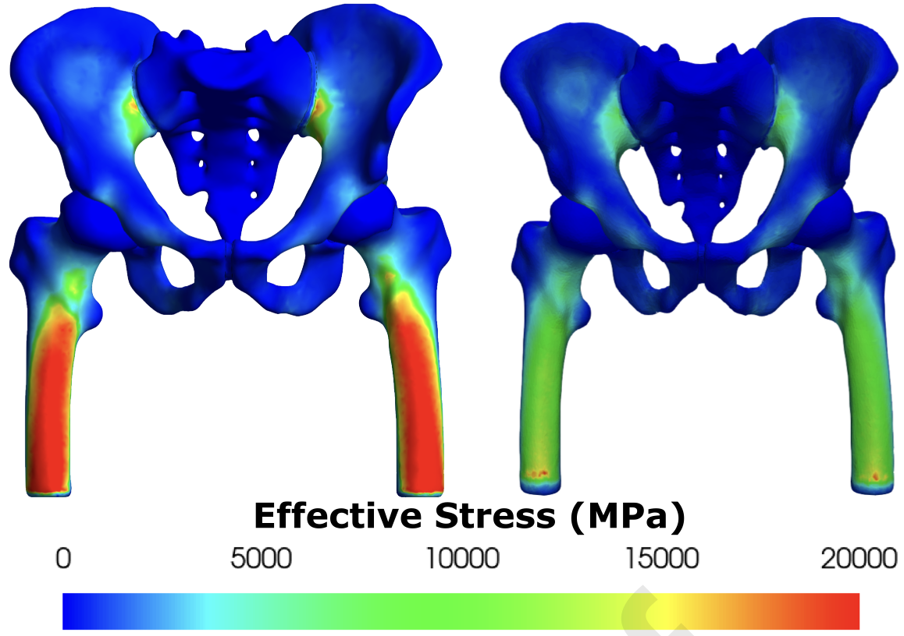
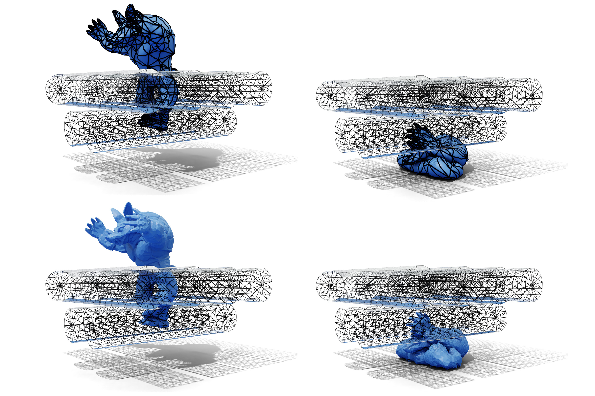
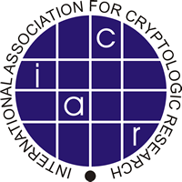

Publications & Preprints
|

|
A systematic comparison between FEBio and PolyFEM for biomechanical systems
Liam Martin ,
Pranav Jain,
Zachary Ferguson,
Torkan Gholamalizadeh ,
Faezeh Moshfeghifar ,
Kenny Erleben ,
Denis Zorin,
Teseo Schneider,
Daniele Panozzo,
Computer Methods and Programs in Biomedicine, 2023
|
|

|
High-Order Incremental Potential Contact for Elastodynamic Simulation on Curved Meshes
Zachary Ferguson,
Pranav Jain,
Denis Zorin,
Teseo Schneider,
Daniele Panozzo,
ACM SIGGRAPH, 2023
|
|

|
Spy Based Analysis of Selfish Mining Attack on Multi-Stage Blockchain
Donghoon Chang,
Munawar Hasan,
Pranav Jain,
Cryptology ePrint Archive, 2019
|
Template Overfitting on 1 and 2.
|
|